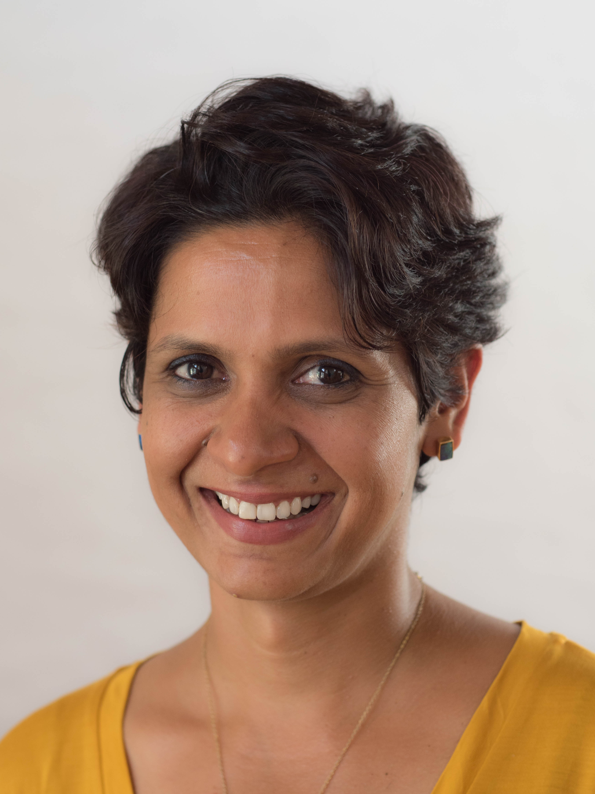

Network Of Women
Leap from Passion to Profession
2nd Episode
-------------------------------
-------------------------------
Network of Women (N.O.W.) brings together women from all walks of business. From the entrepreneurial to the curious, ambitious and successful leaders. They have a passionate enthusiasm for sharing their choices, their journeys, successes
and failures with the larger community of women. And this is the reason for N.O.W. to exist.
Come, hear the experiences that have shaped the person, these strong women have become. Learn practical tips and ideas for putting your best
and most confident foot forward. Do encourage other women in your network to come and join in the activities and network with us at N.O.W!
For any further questions / suggestions write to us at:
now@thoughtworks.com
9:00 am
Registrations
9:30 am
Welcome Note
10:00 am
How to craft/spin your success story

By: Tanvi Dubey, Lead, Community Engagements at YourStory Media
A product of Notre Dame Academy, Patna and Delhi Public School, Delhi Tanvi went on to complete her graduation and post-graduation from St. Stephen's College, Delhi University.
As Editorial Assistant with the prestigious journal - Indian Economic and Social History Review (IESHR), home to world renowned historians like Ebba Koch, William Dalrymple, Barry Flood, Ramachandra Guha among a long list of others, Tanvi honed her editorial skills.
On the back of the current wave of entrepreneurial zeal in India, Tanvi champions women's emancipation especially of the entrepreneurial variety. Passionate about women's rights and gender equality Tanvi today leads on the HerStory platform of YourStory, a leading media tech company that shares stories of entrepreneurs and changemakers. HerStory is a celebration of women voices, who they are and what they can be.
10:30 am
From Passion to Bucks: A journey & insights

By: Monika Manchanda, Chef, Founder at Sin-A-Mon and a Food Consultant
An ex-IT person turned into one of India's leading food & travel blogger, consultant, home baker and an amateur food photographer. Monika writes Sin-A-Mon Tales, which has been widely covered under various national and local news dailies as well as magazines and is amongst the top food blogs of India.
She has also helped setup many cafes and restaurants with menu and recipe designs. She works with brands like Philips, ITC, Kellogg's, Fortune Foods and more to design recipes around their products. Her baking and cooking workshops are very popular with kids and adults alike and she has partnered with JW Marriott, Nature's Basket, HippoCampus and more to take them around the city.
From one role to many she says it has been an exciting journey. Sin-A-Mon Tales is her canvas for food memories, where she shares reviews, recipes and food stories from travels and her childhood.
11:15 am
Primal Posture for Pain Free Life

By: Sangeeta Sundaram, Co-Founder, Nucleus Insights and Gokhale method Teacher on Primal Posture
Sangeeta was on a quest for long -term relief from her debilitating back pain that she suffered for nearly 16 years. She took a Foundation course with Esther Gokhale in the US in 2012 which transformed her, helping her get back to an active life and sense of well being.
After personally experiencing the power of the simple yet profound method, that is natural, logical and empowers people to help themselves, Sangeeta decided to become a teacher and bring the Gokhale Method to India. She teaches in Mumbai and offers classes in other cities in India.
Sangeeta also runs a consulting firm that specializes in helping organizations, journey through change. This involves working with leadership teams to foster a desired corporate culture and equipping them to lead transformation. She is deeply involved in developing women leaders for senior roles in various organizations. She finds that the two lines of work one working with individuals to regain a pain free life and other helping leadership reach their potential, complement each other well.
12:15 pm
Lunch
01:30 pm
The biggest Mistakes you can make when starting out to find your Passion

By: Itisha Peerbhoy, Brand and Business storyteller, Creative copywriter and Content Magician
Itisha Peerbhoy is the author of the bestselling novel “Half Love Half Arranged” published by Penguin. She is a nine-time award winner for excellence in advertising. She consults for some of Bangalore’s best ad agencies and more successful start-ups.
Itisha is also a qualified Talk-Therapist, Ex-ThoughtWorker and is currently writing her third novel. (A new non-fiction book, is awaiting publication this year)
2:00 pm
Journey of seeds, from soil to plate: A session on growing your own organic food

By: Sumathy, Founder @My3leaves, Environmentalist, Organic Gardener
Sumathy Sreekumar is the co-founder and owner of My3leaves. She is a freelance writer by profession and has worked in the IT industry for over 2 decades. She is a passionate gardener and is in the mission of spreading the fever of growing your own food. Sumathy is also an active volunteer of plastic ban and swatchagraha initiatives. She believes that everyone is responsible for the waste they generate and has to manage the waste they generate on their own.
She will be coming here to inspire everyone to grow their own food and become a responsible citizen.
3:00 pm
Tea break
3:15 pm
The Leap of Faith. Don’t take it!

By: Priya Jain, Founder @Mishikrafts, handmade beauty supplies
Priya is the co-founder of Mishikrafts-a homegrown venture that supplies soap, chocolates and a variety of other chemical-free beauty products. Priya quit her job in News9 where she was working as a producer and journalist, in order to pursue her passion as a full time profession.
She would like to share the kind of hard work that goes into building and sustaining a small business and how a lot of people would be better off NOT taking the leap of faith.
3:45 pm
Networking & Feedback
ThoughtWorks Technologies (India) Pvt. Ltd. ACR Mansion G + 3floors 147/F, 8th Main,3rdBlock Koramangala Bangalore-560034 « Open in Google Maps »